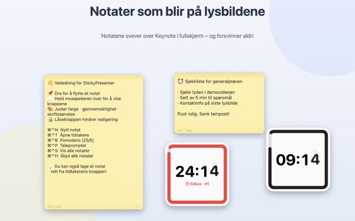
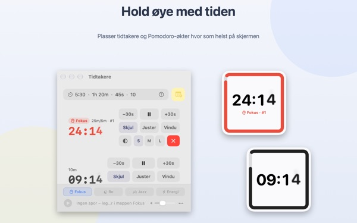
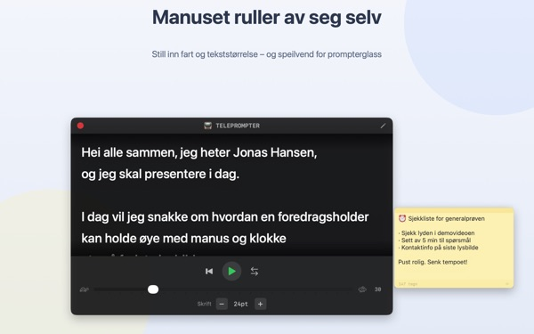
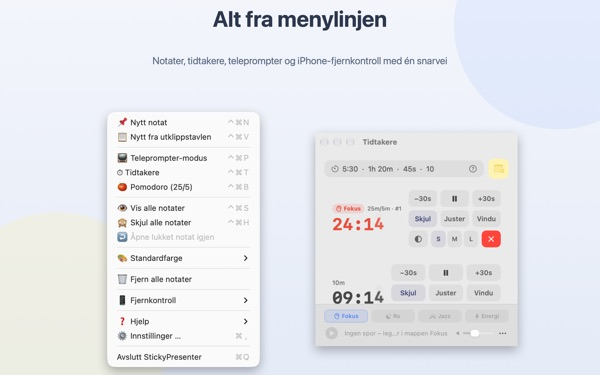

Manus og gjenstående tid
rett på lysbildet
Sett Keynote i fullskjerm, så blir notatene og tidtakeren liggende oppå. De tar aldri fokus fra presentasjonsappen, så klikkeren blar fortsatt i lysbildene.
Alle funksjoner er gratis. Krever macOS 14 eller nyere.

Prøv det på et lysbilde
Skriv inn en tid slik du ville gjort i appen. Trykk på 15s for å se hvordan widgeten varsler deg når tiden holder på å renne ut.
Hvor har du manus og klokke når du presenterer?
Presentatørvisningen krever en ekstra skjerm, og et blikk på armbåndsuret legger publikum alltid merke til. Kanskje du har festet en papirlapp på laptopen og sett den falle av. StickyPresenter fester manuset og gjenstående tid rett over lysbildet, der blikket ditt allerede er.
Ett blikk, og du vet hvor mye tid som er igjen
En kvadratisk widget i hjørnet viser gjenstående tid. Den blir rød når slutten nærmer seg, og når tiden er ute, kommer et lydsignal og kanten blinker.
Skriv tiden slik det passer deg, for eksempel 5:30 eller 1h 20m, eller 25/5 for en pomodoro som veksler mellom fokus og pause. Åpne tidtakeren i et eget vindu for å dele bare det vinduet ved skjermdeling eller AirPlay.

Les manuset og se i kameraet
Teleprompteren ruller manuset i tempoet du velger, og stopper av seg selv på slutten. Kopier manuset, trykk ⌘⌃P, og den åpnes med teksten.
Det finnes speilvending for teleprompterutstyr med speilglass, og tempo og skriftstørrelse huskes til neste gang.

Du forlater aldri lysbildet
Appen kjører diskré i menylinjen, uten symbol i Dock og uten vinduer å holde styr på. Snarveier som ⌘⌃N for nytt notat og ⌘⌃T for tidtakere virker selv i Keynote i fullskjerm.
På scenen kan du med den gratis iPhone-appen Remote Controller for Sticky starte og pause tidtakeren og flytte widgeten hvis den dekker et lysbilde.

Kom i gang i tre steg
- 1
Åpne appen
Et notatsymbol dukker opp i menylinjen, og første gang åpnes en kort veiledning.
- 2
Legg til notat og tidtaker
Kopier manuset og trykk
⌘⌃V, og skriv så lengden på innlegget i tidtakerfeltet. - 3
Gå til fullskjerm
Notatet og tidtakeren blir liggende øverst.
Snarveier og tidsformater
- ⌘⌃N
- Nytt notat
- ⌘⌃V
- Nytt notat fra utklippstavlen
- ⌘⌃T
- Vis eller skjul tidtakere
- ⌘⌃B
- Start en pomodoro (25 min fokus, 5 min pause)
- ⌘⌃P
- Teleprompter
- ⌘⌃S · ⌘⌃H
- Vis eller skjul alle notater
- 10
- Et tall alene betyr minutter (10 min)
- 5:30 · 1:15:00
- Minutter:sekunder, timer:minutter:sekunder
- 1h 20m · 45s
- Med enheter
- 25/5
- Fokus/pause på rad til du stopper
Alle snarveier bruker Kommando (⌘) og Kontroll (⌃) sammen og virker selv når du er i en annen app. Tidtakere kan settes opptil 99:59:59.
Vanlige spørsmål
Er det virkelig gratis?
Ja. Alle funksjoner er gratis, og iPhone-appen Remote Controller for Sticky er en egen, gratis app. Hvis appen hjelper deg, kan du gi utvikleren tips under Innstillinger; det låser ikke opp noe.
Kan jeg vise bare tidtakeren ved skjermdeling eller speiling?
Ja. Med Vindu-knappen i raden til tidtakeren åpner du den som et vanlig vindu. Da vises den i vinduslisten for skjermdeling og AirPlay, og du kan dele bare den.
Jeg har skjult en tidtakerwidget og finner den ikke.
Hold pekeren over raden til tidtakeren i tidtakervinduet, så markeres plasseringen til widgeten med en stiplet linje. Klikk på Juster for å hente den tilbake ved siden av vinduet.
Jeg lukket et notat ved et uhell.
Bruk Åpne lukket notat igjen i menylinjen for å hente tilbake et av de 20 siste. Notater lagres mens du skriver, og kommer tilbake på samme sted når appen åpnes igjen.
En snarvei virker ikke.
Står den i snarveitabellen i veiledningen som Brukes av en annen app, har en annen app tatt den først. Avslutt den appen, så virker snarveien igjen. Det trengs ingen tillatelse for tilgjengelighet.
Hvorfor ber Kameleon-temaet om skjermopptak?
Kameleon leser fargen på skjermen bak widgeten og tilpasser seg, og til det trengs den tillatelsen. Ingenting lagres eller sendes. Uten den fungerer temaene System, Lys og Mørk som vanlig.
Hvordan legger jeg til bakgrunnsmusikk?
Velg en stemning (Fokus, Ro, Jazz eller Energi) i musikklinjen nederst i tidtakervinduet, så lager appen en mappe for hver. Legg inn dine egne låter, så spilles de i rekkefølge sammen med tidtakeren. Appen kommer ikke med musikk.
Fjernkontrollen på iPhone finner ikke Macen min.
Sjekk i denne rekkefølgen: Kjører StickyPresenter på Macen (symbol i menylinjen)? Er begge enhetene på samme Wi‑Fi, ikke på gjestenett eller mobildata? Er Lokalt nettverk tillatt under Personvern og sikkerhet på både iPhone og Mac? Er VPN slått av?
Fjernkontrollen sier at paringskoden er feil.
Skriv inn den firesifrede koden som vises nå under Fjernkontroll i menylinjen på Macen. Har du klikket på Ny paringskode, gjelder bare den nye. Etter første paring kobler den seg til så snart du åpner appen.
Kan noen andre styre tidtakeren min?
Ikke uten koden din. Macen godtar bare fjernkontroller som har skrevet inn riktig kode, over en kryptert direkte forbindelse i det lokale nettverket. Har noen sett koden, bruk Ny paringskode eller Glem parede fjernkontroller under Fjernkontroll i menylinjen.
Hvor lagres notatene og manusene mine?
Bare på denne Macen. Ingen konto, ingen reklame, og ingenting sendes på nett utenom anonym bruksstatistikk og tilbakemeldinger du selv velger å sende.
Spørsmål, feil eller ideer? Skriv til mizzking75@gmail.com.